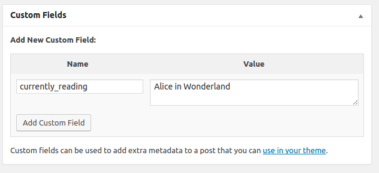
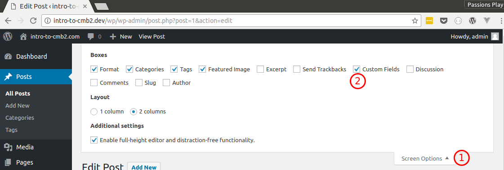
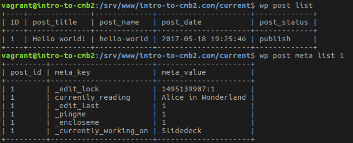
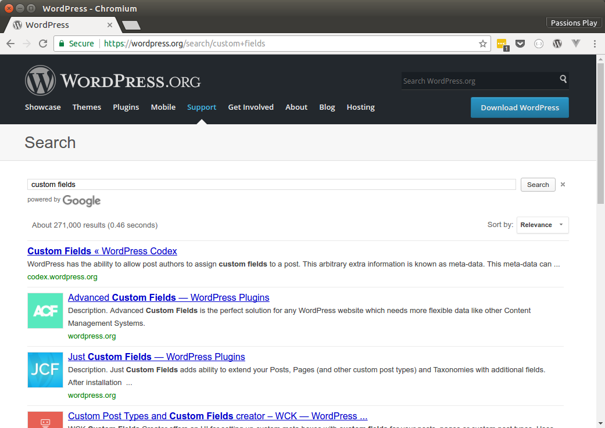

Custom fields are arbitrary meta data that we can assign to a post.
This data is in the form of a key / value pair.
So for example, if we wanted to record the name of the book we are currently reading when we are writing a specific post, we might:
Alice in Wonderlandcurrently_readingWordPress allows us to do this out of the box.
Note that WP calls the Key 'Name' in this instance.
If that metabox isn't displayed, you might have to enable it by checking "Custom Fields" from the "Screen Options" button towards the top of the edit post screen.
It's only text input.
It doesn't show all of the custom fields for a post. (ie. things prefixed with an underscore)
Who really wants to hand enter something like location?
US Bankcorp Tower
There are a lot of plugins that work with custom fields
